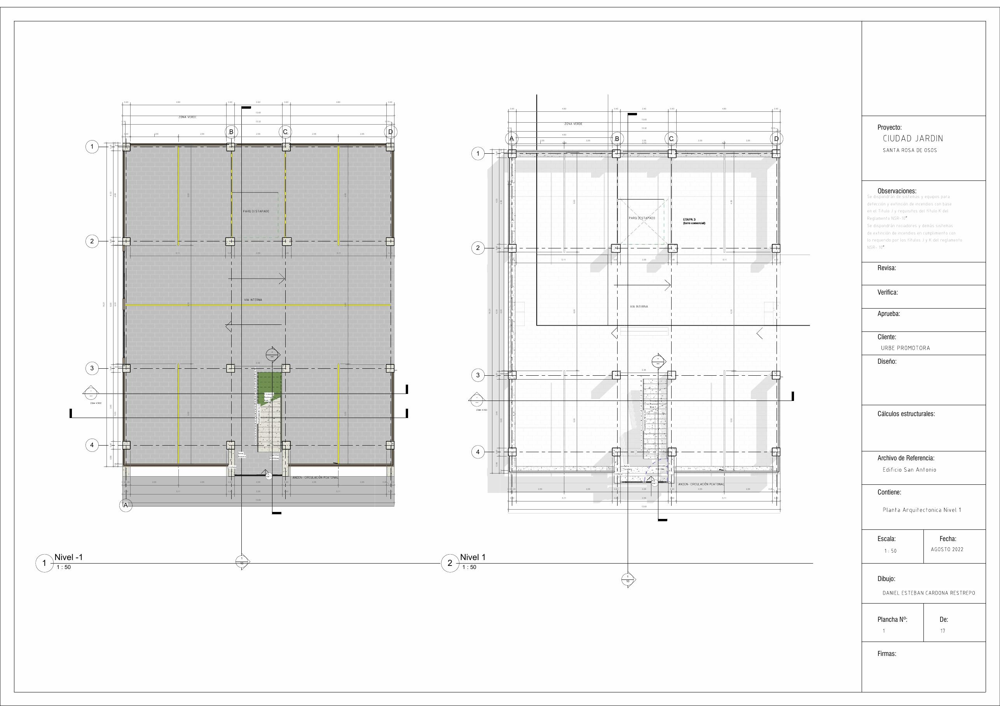

Primera etapa de Ciudad Jardín.
Un desarrollo residencial planteado para ejecutarse por etapas, con vivienda funcional, parqueaderos integrados y una visión urbana de largo plazo.
apartamentos proyectados
tipología base de trabajo
La presentación se concentra en TERRA como producto concreto. Ciudad Jardín aparece como el desarrollo mayor del cual TERRA constituye la primera etapa.
Se incorpora ya el plano arquitectónico disponible del proyecto, sustituyendo el marcador gris de la versión inicial.

La tipología comercial de trabajo es de aproximadamente 65 m². La estrategia es entregar el apartamento en obra gris y permitir que el comprador adquiera el paquete de acabados por separado.
Escenario de trabajo para los primeros ocho apartamentos. Estos valores deben tratarse como base financiera del proyecto hasta su aprobación comercial definitiva.
| Grupo | Unidades | Precio apartamento | Parqueadero |
|---|---|---|---|
| 01 | 2 | $292,5 millones | $40 millones |
| 02 | 2 | $299 millones | $40 millones |
| 03 | 2 | $305,5 millones | $40 millones |
| 04 | 2 | $312 millones | $40 millones |
Paquete opcional de acabados usado en el escenario financiero: $58 millones por apartamento.
Herramienta preliminar para visualizar el valor total y la estructura básica de pago.
Cuota inicial: $0
Saldo: $0
Simulación informativa. No constituye oferta comercial.
La estrategia de comunicación separa el producto ejecutable de hoy del potencial futuro del macroproyecto. Esto permite vender TERRA con claridad sin presentar como definitivas las etapas posteriores de Ciudad Jardín.